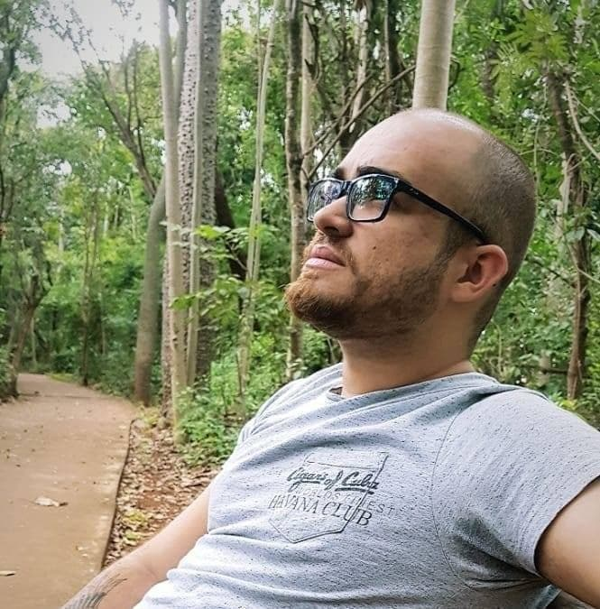
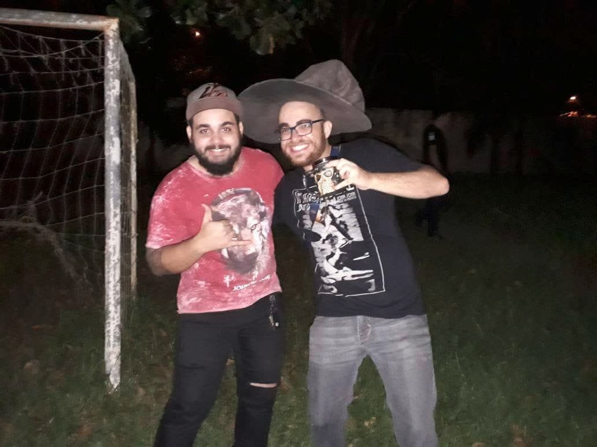

A brief story of my life
I absolutely love creating things and seeing them come to life. It's magical. And there's nothing like the thrill of overcoming a big challenge. You can see why I love programming.
I've met this passion of mine since I was a kid, around 11 years old, when I started to develop games in RPG Maker - a program for creating jrpgs - learning every single tool in the software. Although it was visual scripting, everything was there: if clauses, loops, local and global scopes, objects, and many other things. The programming logic was the first logic I knew. This was also when I learned a lot of English on my own, using a physical dictionary, since I didn't have internet connection back then.
I have strayed from the path for a few years, worked in many other areas, most notably as a high school tutor, and accumulated experience with different things. When the pandemics hit and left me unemployed, I saw it as an opportunity to get back to programming, my true passion, and so I did. I have been very dedicated to learn it since then, and now - even though there is always something more to learn - I'm ready to land on a real job, with confidence that I'm going to be able to contribute and be really useful.
I love RPG
I love games, and the RPG genre of video games has always been my favorite, even when I was like 6 years old, playing SNES games on emulators - early Final Fantasies, Super Mario RPG, 7th Saga, Front Mission, Tales of Phantasia, etc.
Considering I've always loved to create stories, it is no surprise I was enamored when I discovered tabletop RPG, over 10 years ago. I still remember my first PC, on my first table, in D&D 5th: a human soldier, Fighter, with Heavy Armor Master as the talent (I've always been good at optimizing things).The rest is history...
Ever since, I have been playing and GMing on a multitude of systems, from D&D to GURPS, in many genres and scenarios. I have created many worlds and many characters, and I'm currently working on a system of my own. It's a d10 dice pool system
I'm also really proactive with the hobby. I've introduced dozens of people to tabletop RPG. I'm always reading about it, discussing in forums, and I'm always learning. Recently, I have organized an event on my programming school: Trybo RPG. Many people were interested, and 12 new players met and fell in love with our precious hobby.
This is the cover I drew, painted and animated for the event:
I'm a problem solver
I cherish a good challenge. Truly, I must feel challenged almost every day. I seek them, and I treasure facing them.
This makes me a good problem solver. I have many tactics for tackling problems, but mostly I always break them in smaller pieces - I analyze them, create solutions, then create problems for the solutions, and work iteratively until I come with a solution that will really crack it.
My early contact with programming allows me to see the world critically, and I always try to simplify my solutions to make them as elegant as possible.
I'm also a people person
I'm really sociable. I truly enjoy talking about things, and I enjoy a good informal ambient. I work hard, but I also like to chill, and to play hard.
Thanks to my previous career as a high school tutor, I'm communicative, and I'm always open to give and receive feedback. I can be perfeccionist at times, but I'm working on that.
This is me at a party (with the wizard hat):
I learn really, really fast
I know everyone says that, but I do have a true knack for it.
I have also extensively studied the art of learning, also thanks to my previous career as a tutor, and wrote a brief scientific article on a method of revision.
I'm involved and dedicated
Things don't often pique my interest, but when they do, I go all in.
It's hard to put this characteristic in words, but I'll give an example: after Angel Piscola told me on an email that I need to know about backend scaling, I've messaged the CTO of the programming school I'm in for directions on the topic, and I have been studying it.
Bonus skills
I've talked about my main skills, besides the required React, TypeScript and Node, but I believe some other things may come in handy:
- I can design. Although it's not my primary skill, I'm not clueless with design, and I understand most of the principes, such as information hierarchy and white space. I know how to use the tools, Adobe Suite, Figma, among others..
- I can write. Even though English is not my first language and sometimes it isn't perfect, I know how to write well, since I have taught essay writing in the past.
- I can illustrate. I'm not a professional artist, but on a pinch, I can supply the need. Here are some pictures of concept arts I created for a game I'm developing on Scratch.
Example project: ColorQuest
I've been working hard for the last couple weeks on this project especially to have an example of my React skills for the job, since I don't have the 3+ years experience listed on the posting.
Here's the link: https://colorquest.me. It's a color picking game made with Next+React+TypeScript.
You can find the repository here. For now, there is no documentation, since I've finished the project today. I'm working on documentation and other issues I have listed of the repo.
I have used functional components to practice hooks, and experimented with changing CSS variables from within the Contexts.
insert picture of colorquestTestimonials
-
"It's always a pleasure to work with Inacio! His curiosity, industriousness and creativity are notable and make him an invaluable member of any endeavor."
Renato Bispo, colleague at Trybe. insert picture -
"So good a business partner that become a brother. He's a rare person that always goes through with what he's proposed to do."
Gabriel Duarte, former business partner. insert picture -
"I've had the pleasure of meeting Inacio in the web development course at Trybe and participating with him in some team activities. Inacio is very thoughtful and dedicated to the projects. From the beginning of the course, he's always been available to help the class by creating explanatory videos, participating in study rooms and answering questions that appear in the course's channel. For sure an inspiring person!"
João Lima, colleague at Trybe. insert picture